People taught · 1996–2016
Shipped · Mar–Aug 2026
For twenty years I taught students how to win the old game. In the last six months I built thirty-eight things to find out what the new one asks for.
I'm Kent Kim. I graduated in economics from Harvard in 1997, ran an Ivy League admissions academy in New York and Seoul, and spoke to more than a million students, parents and teachers across Korea between 1996 and 2016.
Then I spent six months building software at volume with AI, and came out of it convinced that what I used to teach students to optimise for is being repriced in front of us. That is what I come to schools to talk about — and everything on this page is something you can open and check.
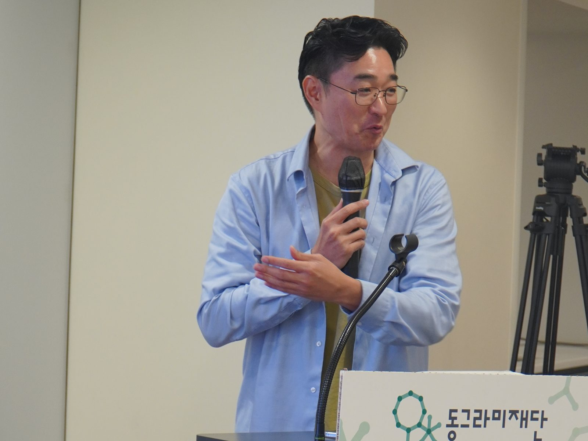
01 · What I'd bring
A session that ends with something that did not exist when it started.
The argument about whether students should use AI is finished. The harder question is what a student can now demonstrate that AI cannot simply hand them — and increasingly the answer is the finished, shipped thing itself. Something a stranger can open on their own phone and form a judgement about in ten seconds.
I am not guessing at this from outside. I ran an Ivy League admissions academy in New York and then in Seoul for eight years, taught SAT reading and writing, and wrote books about getting in. I am not here to sell any of that. I am here because I think the thing it optimised for is being repriced, and I would rather say so to a room of students than pretend otherwise.
Students · 60–90 min
Build one thing, today
An idea from the room becomes a deployed application before the session ends. Students scan the QR code and use it on their own phones. Then we talk about what that means for the next four years.
Teachers · 60 min
Running it without a CS department
The actual workflow, the three places it reliably breaks, how to assess work when the code is no longer evidence of effort, and how a history department ships a source-analysis tool as easily as maths ships a visualiser.
Parents · 60 min
What changed, and what didn't
An honest evening session: which parts of university preparation AI has genuinely altered, which parts are unchanged, and what it looks like when a teenager builds something real instead of collecting activities.
The part that isn't a slide deck
The live build
I take a problem from the audience — something real at that school — and build a working application on stage. It deploys before the session ends, to a public address, with a QR code on screen. People open it, use it, and break it while I'm still standing there.
Then we take apart what just happened. That is the session. The talking is the debrief, not the event.
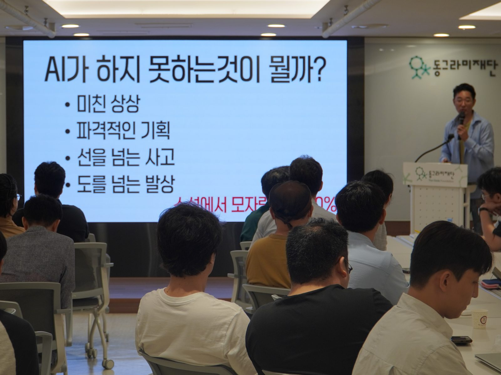
02 · Teaching
Twenty years in front of rooms.
Between 1996 and 2016 I spoke to more than a million students, parents, teachers and employees across Korea — universities, high schools, companies, city governments, a juvenile detention centre and an orphanage.
- Schools & universities
- Daejeon University freshman orientation, 2,500 students. Sogang, Inha, Hanyang, Kookmin, Sungkyunkwan, Handong, Andong, Kyungnam, Jeonju, Chugye, Halla, Mokwon. Seoul Global High School (450) · Gyeonggi Academy of Foreign Languages · Seongnam Foreign Language High School · Cheonan Bugil High School (500) · Ilsan Daehwa High School (400) · Jirisan High School, two days residential.
- Parents
- Three consecutive 1,000-parent lectures in one week — northern Seoul, southern Seoul, Busan (2005). Time Education Holdings, 1,200 parents (2008).
- In the United States
- Blair Academy, New Jersey (2003) · Northern Valley High School, New Jersey (2004) · KASCON at the University of Washington (2005) · lecture series in Denver, Flushing, Queens and New Jersey.
- Companies & government
- LG Electronics · Samsung Heavy Industries · SK Chemicals · JVM · Maeil Business CEO design programme · Songpa, Seongdong, Yangcheon and Deogyang district offices · Chungcheong provincial government · the Korea Coast Guard Academy.
- Where it is least comfortable
- A juvenile detention centre in Gyeonggi (200 young people, 2007). Namsan orphanage. Children in Jeonju heading households alone. These are the rooms that taught me what a talk is actually for.
- On television
- MBC — Kent Kim's Harvard Study Strategy, a 20-episode series (2009). Also a corporate course on time and network management for Korea HRD Broadcasting.
- Volunteering
- Founded Bongsa Special Forces in 2010 with eight people. It now has 2,200.
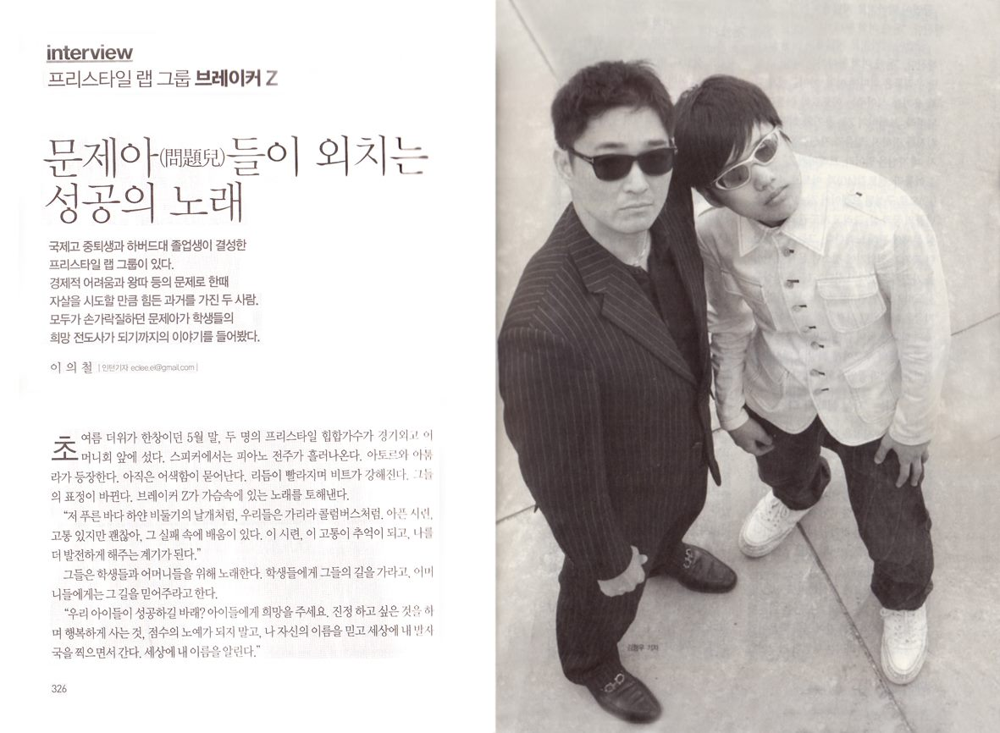
03 · Admissions
I taught the thing I am now asking schools to reconsider.
This matters for how you read everything else on this page. I am not an outsider with an opinion about university admissions. I built a business on it, on two continents, for eight years.
- Ivy Plan · New York
- Founded 2003. SAT preparation for Korean-American students, across three locations in New York and New Jersey through 2005.
- Ivy Plan · Seoul
- Founded 2008 in Apgujeong with a fellow Harvard alumnus. I taught SAT reading and writing myself, 2009–2010.
- Chungdahm Institute
- Director, 2005. National lecture tour across its branches, 2005–2007.
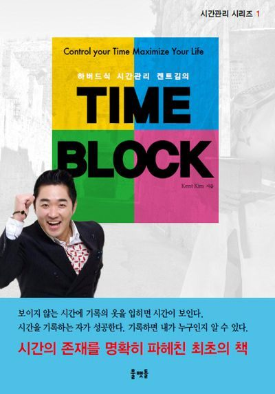
- Before any of that
- Taught weekend SAT classes at the Korean church in Cambridge, Massachusetts, 1995–96 — while still an undergraduate.
- Written on the subject
- Early Study Abroad at the Ivy League · I Can Get Into Harvard Too, vols. 1–2 · Studying Abroad, the Harvard Way · Harvard Time Management: Time Block.
- Wisemom
- Founded an English-education newspaper in 2011 under the line change the mother and you change the world, and ran the first Mentor Conference in 2012 — high-school and university students meeting mentors, on the premise that real education is contact rather than memorisation.
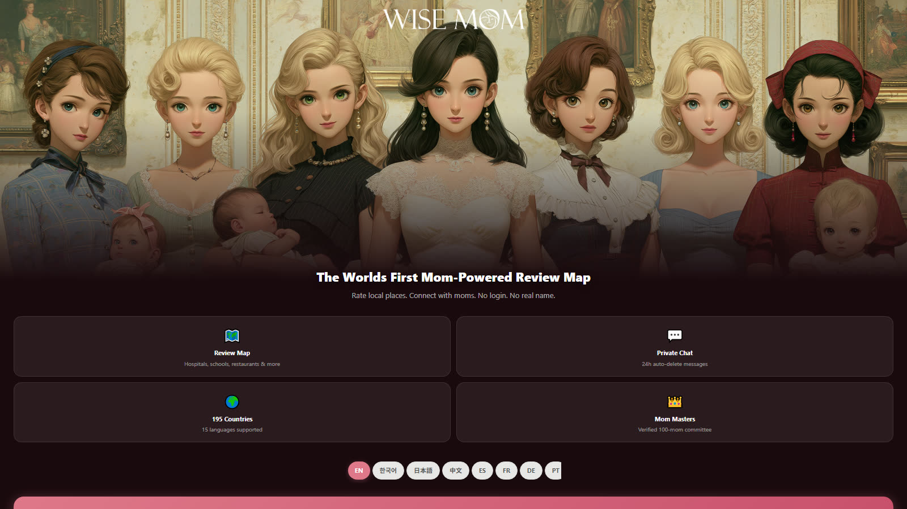
04 · 1996
The thing I did as a student that AI still cannot do for you.
As an undergraduate I wrote letters to ten thousand political and business leaders around the world. More than three hundred of them wrote back.
The Director of the Central Intelligence Agency
Jack Welch · the chairmen of Kodak, Coca-Cola, Ford, Matsushita and Mitsubishi
Yehudi Menuhin · Senator Edward Kennedy
Six successive presidents of Harvard
Margaret Thatcher's office, declining an audience — in writing
The same year I travelled to China, Japan, Singapore, Hong Kong, Malaysia and Thailand to meet students at Peking University, the University of Tokyo and the National University of Singapore — the people I assumed would be running Asia thirty years later. I later wrote a book about it, Write to Ten Thousand People.
I tell students this story because a language model can draft ten thousand letters in an afternoon, and that is exactly the point. What could not be automated then and cannot be automated now is being the person who actually sends them, and who is still standing there when three hundred replies arrive.
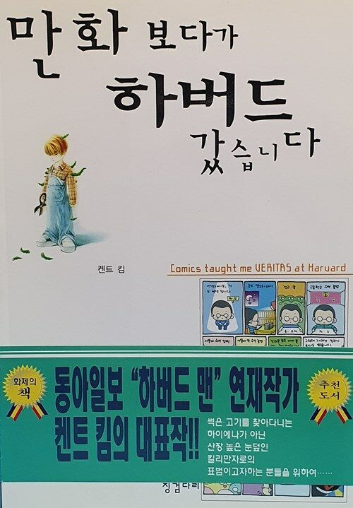
05 · Broadcast
On air.
CBS · SebasiFifteen Minutes to Change the WorldKorea's largest public talk platform.
EBS · United NationsHost, UNAI roundtableWith Secretary-General Ban Ki-moon and UN ambassadors.
KBS · Morning PlazaThree appearances2000, 2001 and 2012.
CTSYoung Eagles 300Talk to an audience of young people.
I also produced and hosted my own interview series, Kent Kim's Show, with guests including the actor Lee Soon-jae, the boxer Hong Soo-hwan, and Hyun Jin-young, Korea's first hip-hop artist.
06 · Also
Books, songs, and a hip-hop record made with a boy who tried to end his life.
- Books
- 23 published.
I Got Into Harvard Reading ComicsSerialised the comic strip Harvard Man in the Dong-A Ilbo.
The Harvard Way to a Successful Life
Early Study Abroad at the Ivy League
English Special Forces: Vocaforce 1–2
A Letter to Koreans: Too Early to Stop
The Secret of Top Marks 1–2
The Science of Winning in One Line
Write to Ten Thousand People
I Can Get Into Harvard Too 1–2
Shameless Harvard Economics
Veritas
Studying Abroad, the Harvard Way
Harvard Time Management: Time Block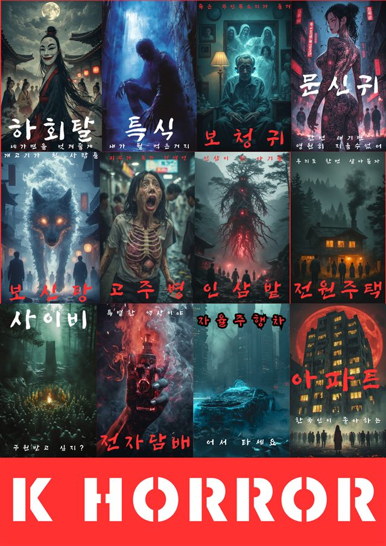
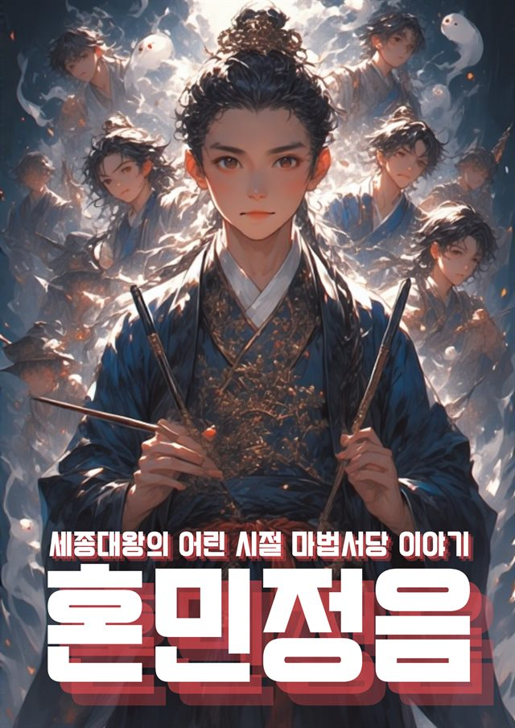
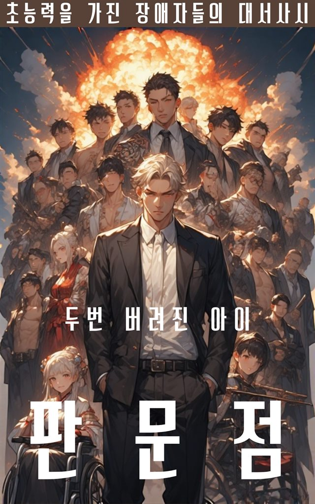
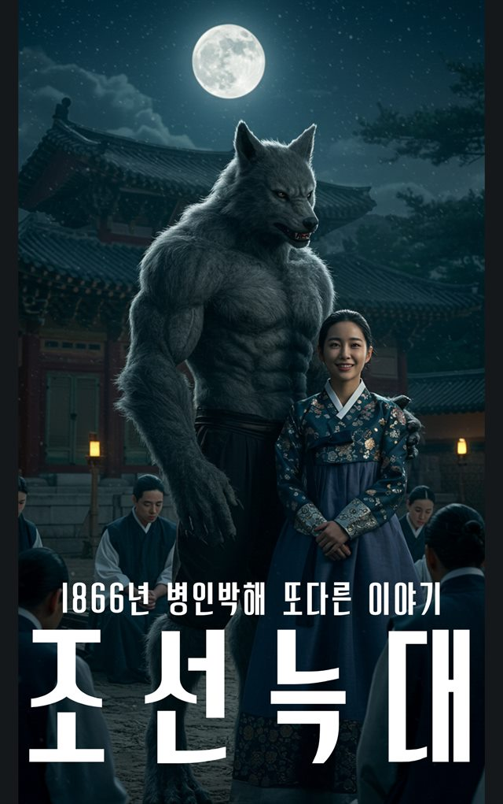
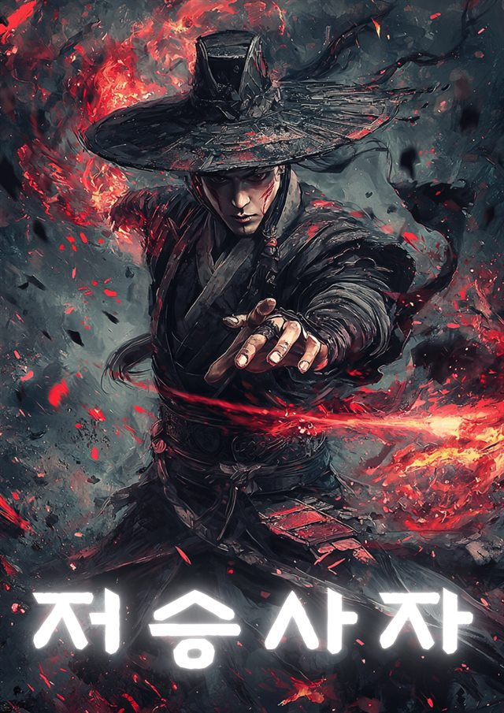
A few of them. The writing and the games come out of the same habit — finish the thing, then put it where people can find it. - Music
- 500 songs written; 407 released through distribution. Started learning to compose in 2012 at the age of forty.
- Wangtta Arirang
- Grand prize, Gugak Broadcasting. Recorded in Korean, English and Japanese, and performed some 300 times. Made with Song Ki-hwan, a student who was bullied at Seoul Global High School and jumped from the sixth floor. He survived. We performed it together — four times live at a professional baseball stadium, and in schools and churches across the country ever since.
- Now
- Chairman, Plato School (2023) · Founder, Deother — a game studio (2022) · Chairman, International Brain Sports Association (2022) · Policy member, Korean Senior Citizens Association. Previously chief of Hope Go, which builds schools and villages in South Sudan, and overseas publicity chief for the Dokdo Love Society.
- Exhibited
- CES Las Vegas 2023 · Tokyo Game Show 2022 · gamescom Germany 2022 · gamescom asia × Thailand Game Show 2025, Korea Pavilion. Ran the first and second Meta-NFT Korea conferences in 2022 — 2,000 and 5,000 attendees.
07 · The register
Thirty-eight things, and where to open each one.
Built between March and August 2026. Nothing here is a mockup or a case study — every row is a live address or public source. A green dot means it is running right now.
Adult-rated titles from the studio's catalogue are not listed here. Two further projects are omitted pending verification. The count on this page is what I can stand behind in front of a room of students.
08 · Recognition
Judged by other people.
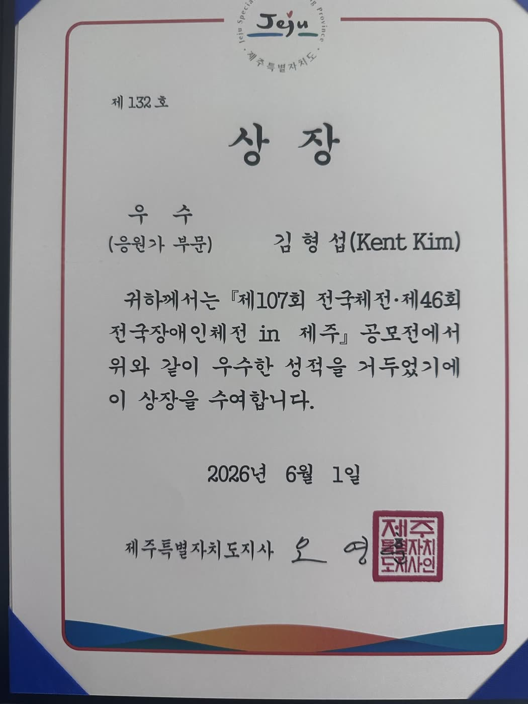
09 · Invite
Bring a session to your school.
Write with your school, city, the audience you have in mind, and roughly when. I'll reply with what the session would look like for that group.
On cost. There is no speaking fee for school sessions. I'm based in Seoul and travel in the region regularly. Where several schools in one city would like a session in the same week, I ask that they share travel and local accommodation between them; for a single school on its own, local accommodation alone is fine. Happy to work with whatever your budget allows.
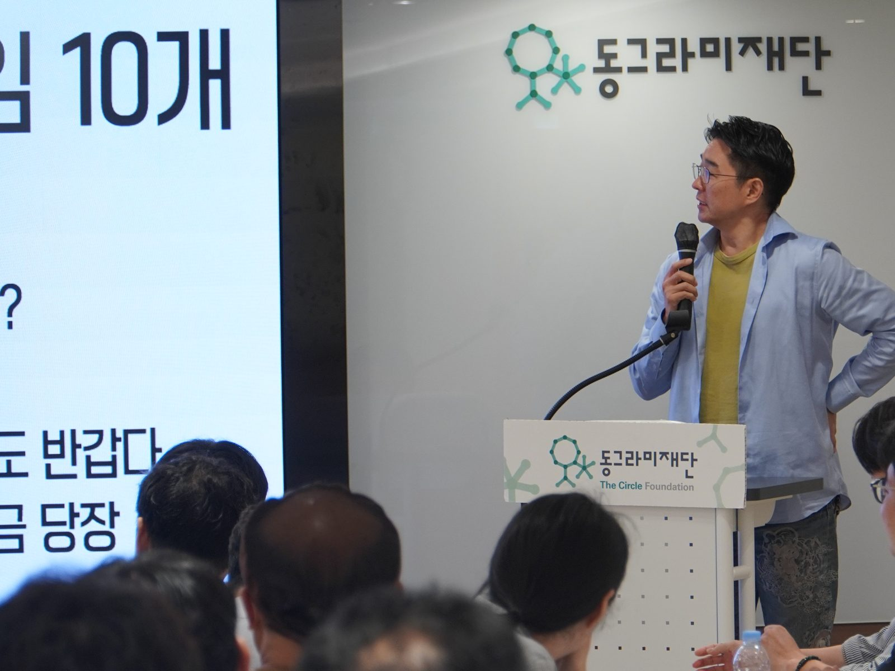